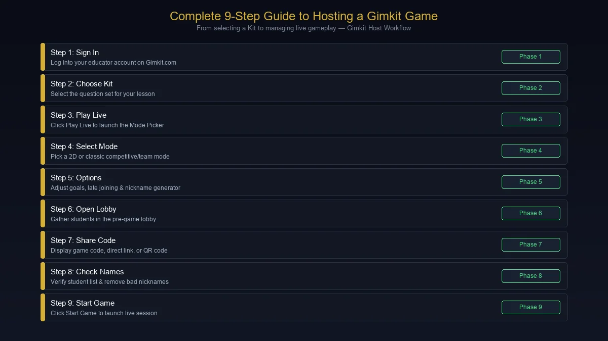
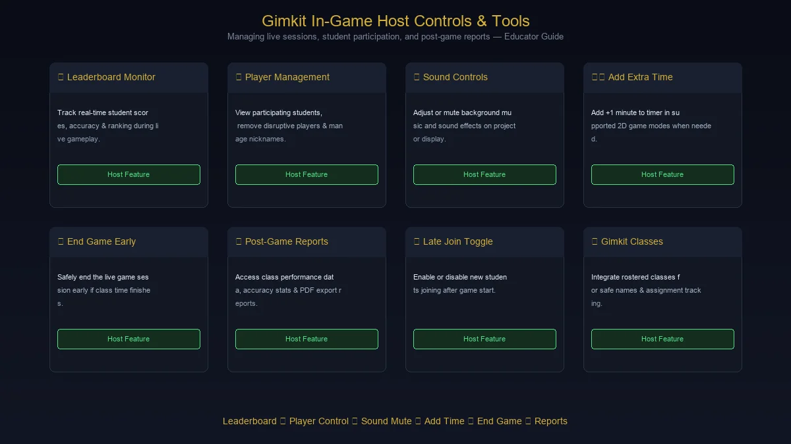

If you are searching for Gimkit host, you probably want to know one of three things: what a Gimkit host actually does, how to host a live game, or how students join the game once it is ready.
The good news is that hosting a Gimkit game is fairly straightforward.
You choose a Kit, select a game mode, configure the game settings, share the game code or join link with students, and start the session. Gimkit's current hosting instructions follow essentially this sequence.
What makes hosting interesting is that the teacher is not simply pressing "Start." A host controls the game environment, decides how the activity should run, manages players, chooses settings, and can monitor the class while the game is underway.
This guide explains the entire process in plain language, including Gimkit host setup, Gimkit game codes, joining a Gimkit game, game modes, host controls, classes, reports, troubleshooting, and practical classroom tips.
What Is a Gimkit Host?
A Gimkit host is the person who starts and manages a live Gimkit game.
In a typical classroom, the host is the teacher or educator. The host selects a Kit, chooses a game mode, adjusts the available game options, opens the lobby, lets students join, and starts the game.
During the session, the host can also use various controls to manage the game.
Gimkit describes live hosting as a way to bring Kits into an interactive classroom experience. Its current process is built around five basic actions:
- Select a Kit.
- Select a game mode.
- Set up game options.
- Share the game code or join link.
- Start the game.
So, when someone searches for Gimkit host, they are generally looking for the teacher-side experience of Gimkit rather than a separate product called "Gimkit Host."
What Is Gimkit?
Gimkit is an educational game-based learning platform designed around interactive question sets called Kits.
Instead of presenting a quiz as a simple list of questions, Gimkit combines questions with game mechanics.
Students answer questions while participating in a selected game mode, and the game can include goals, competition, collaboration, virtual currency, maps, teams, or other mechanics depending on the mode.
Gimkit's official help center currently organizes its platform around Kits, hosting, game modes, classes, assignments, gameplay, and related classroom tools.
This makes Gimkit useful for activities such as:
- Review sessions
- Test preparation
- Vocabulary practice
- Math drills
- Science review
- Language learning
- History questions
- Formative assessment
- Classroom competitions
- End-of-unit review
The host controls the structure of the live activity while students participate from their own devices.
What Does a Gimkit Host Need?
Before hosting a game, you need a Gimkit account.
Gimkit's current account documentation says accounts are free to create, and educators need an account to create Kits and host games. New accounts also receive a 14-day trial of Gimkit Pro, while Pro itself is an optional paid add-on for educator accounts.
For a live classroom game, the host generally needs:
- A Gimkit account
- A Kit to play
- A selected game mode
- A device with internet access
- Students with devices to join
- A screen/projector if you want the class to see the host display
The exact features available can depend on the game mode and account configuration.
How to Host a Gimkit Game
Hosting a live Gimkit game can be broken into a few simple steps.

Step 1: Sign In to Gimkit
Log into your Gimkit account and open your dashboard.
If you are a teacher, your dashboard is where you manage your Kits and access the tools used for live games.
If you do not already have a Kit, you can create one before hosting.
Step 2: Choose Your Kit
A Kit is the question set you want your students to play.
From your dashboard, Gimkit's current interface lets you select a Kit and use the Play Live option to begin the hosting process. You can also launch Play Live from inside a Kit.
Your Kit might contain questions about:
- Algebra
- Biology
- Geography
- English
- Spanish vocabulary
- Chemistry
- World history
- Literature
- Any other subject you are teaching
The quality of your Kit matters because the questions are what connect the game mechanics to the learning objective.
Step 3: Click Play Live
Once you have selected the Kit, choose Play Live.
Gimkit opens its Mode Picker, where you can browse the available game modes.
This is where hosting becomes more than a normal quiz.
Different modes can change the way students interact with the same question set.
Step 4: Choose a Gimkit Game Mode
Gimkit offers multiple game modes, and each one is designed for a different style of interaction.
The official Mode Picker provides descriptions and labels to help hosts choose an appropriate mode.
Depending on the mode, you may find experiences that emphasize:
- Competition
- Collaboration
- Strategy
- Speed
- Exploration
- Teamwork
- Discussion
- Individual performance
Some Gimkit modes are also built as 2D games, where students explore a game world with their Gim characters.
How to choose the right mode
Do not simply choose the most complicated or exciting mode.
Think about your objective.
If you need a quick review, a simpler mode may work better.
If you want collaboration, look for a mode that emphasizes teamwork.
If students need focused repetition, choose a setup where answering questions remains central to gameplay.
The best Gimkit host is not necessarily the person who knows every game mode.
It is the person who chooses the mode that fits the lesson.
Step 5: Configure Game Options
After selecting a mode, you reach the Game Options screen.
This is where the host adjusts how the game will run.
Gimkit explains that game options can include standard settings and mode-specific settings. Depending on the mode, hosts can configure things such as:
- Game goals
- Class connections
- Late joining
- Nickname Generator
- Mode-specific rules
- Game balance settings
The available settings vary according to the selected mode.
This step is worth spending a little time on.
A poorly configured game can become chaotic, while a well-configured one can keep students focused on the questions.
Step 6: Open the Gimkit Lobby
After configuring your settings, continue to open the game lobby.
The lobby is where students gather before the game begins.
You can check who has joined and make sure the correct students are entering the session.
For non-2D games, Gimkit provides a lobby where hosts can review player names and remove inappropriate names before starting. In 2D games, hosts can choose whether they join as a player or spectator.
Step 7: Share the Gimkit Game Code
This is one of the most common reasons people search for Gimkit host.
Once your live game is created, Gimkit provides a game code.
Students can use the code to join.
Gimkit currently supports several joining methods:
- Game code
- Direct game link
- QR code
- Gimkit's join page
Students without connected Classes can visit the Gimkit join page and enter the game code. Hosts can also copy a direct game link.
Using a QR code
A QR code can be particularly useful in a classroom.
Gimkit's current host interface allows you to hover over the game code to display a QR code that students can scan.
This can be faster than having an entire class type a code manually.
Step 8: Wait for Students to Join
Give students a moment to enter the lobby.
Before starting, check:
- Are the expected students present?
- Are there duplicate names?
- Is someone using an inappropriate nickname?
- Does everyone have a working connection?
- Are students joining the correct game?
If you use Gimkit Classes, students can be associated with the class rather than relying entirely on manually entered names. Gimkit says Classes can help keep names appropriate in live games and support assignment tracking.
Step 9: Start the Gimkit Game
Once everyone is ready, click Start Game.
Gimkit's current interface places the Start Game button differently depending on whether you are using a 2D or non-2D mode, but the basic process is the same: once the host starts the game, the live session begins.
Now the host becomes the person managing the session.
What Can a Gimkit Host Do During a Game?
Hosting does not stop once you click Start.
Depending on the mode, the host can monitor the game and use different controls.
Gimkit's host controls can include:
- Viewing the leaderboard
- Viewing players
- Managing audio
- Spectating players in 2D modes
- Removing players
- Ending the game
- Managing certain gameplay actions
- Adjusting available time in supported 2D modes
The exact controls depend on the game mode.
Gimkit Host Controls Explained

Leaderboard
The leaderboard allows the host to see how students are performing during the game.
A projected leaderboard can also make the session more visible to the classroom.
However, do not let rankings become the entire lesson.
The purpose of using Gimkit in education is still learning.
Player Controls
Hosts can view participating students and, in supported situations, select individual players.
This is useful when:
- Someone joins accidentally.
- A student uses an inappropriate name.
- You need to monitor a specific participant.
- You need to remove someone from the game.
Gimkit's documentation confirms that hosts can remove players during live games.
Sound Controls
For supported games, hosts can control music and sound effects from the game controls.
This can be useful when the game is being projected in a classroom and the audio becomes distracting.
End Game
A host can end a live game before its normal game goal is reached.
Gimkit provides an End Game control for ending a session early.
This can be helpful if:
- Class time is ending.
- A technical problem occurs.
- You want to stop and discuss results.
- Students have completed the learning objective.
Can a Gimkit Host Add More Time?
In supported 2D game modes, hosts can click the game timer to add time.
Gimkit's current documentation says the timer can be used to add one minute at a time, subject to the game's time limits.
This can be useful when:
- Students need another minute.
- A technical delay occurred.
- The class is progressing well and you want to extend the activity.
Not every hosting feature works identically across every game mode, so always check the options presented for the mode you selected.
Can Students Join a Gimkit Game Late?
Yes, where the selected game configuration allows it.
Gimkit includes a Join in Late setting among its standard game options. Live games default to allowing students to join late, according to Gimkit's current help documentation, although hosts can change that setting.
This is particularly useful in real classrooms because students do not always enter at exactly the same moment.
However, there are situations where disabling late joining may make sense.
For example, if you are dealing with students intentionally disrupting a game, controlling late entry can help.
What Is the Gimkit Nickname Generator?
Gimkit also provides a Nickname Generator option for live games.
When enabled, the system assigns safe names to students rather than allowing them to freely choose their own names. Gimkit says this option disappears when using Classes because Classes already provide name-management functionality.
This can be useful for younger students or classrooms where inappropriate usernames have previously caused problems.
What Are 2D Gimkit Game Modes?
One of Gimkit's distinctive features is its collection of 2D game modes.
In these modes, students explore game worlds using small characters called Gims.
Gimkit describes 2D modes as experiences where students explore 2D environments while answering questions to progress through the game.
These modes can introduce:
- Exploration
- Strategy
- Movement
- Competition
- Teamwork
- Game objectives
The educational questions remain part of the experience rather than being completely separated from the game.
How Does Question Answering Work During Gimkit Games?
The exact mechanics depend on the selected mode.
In some games, answering correctly can generate in-game currency, energy, movement, abilities, or other advantages.
That creates an important feedback loop:
Answer question → Receive game benefit → Make gameplay decision → Continue learning
The exact reward mechanism changes between modes.
Gimkit also provides 2D game balance options that allow hosts to adjust how strongly question answering affects gameplay. For example, different modes may let hosts change rewards such as energy, bait, or other game resources earned from correct answers.
Gimkit Host Tips for Better Classroom Games
Knowing where the buttons are is only half of hosting.
The other half is classroom management.
Here are practical ways to make a Gimkit session work better.
1. Prepare the Kit Before Class
Do not build your entire game five minutes before students arrive.
Review the questions.
Check:
- Correct answers
- Spelling
- Difficulty
- Question clarity
- Duplicate questions
- Images or media
- Distractor answers
A game can be exciting and still teach the wrong thing if the question set contains mistakes.
2. Match the Game Mode to the Lesson
Think about what students should accomplish.
For review:
Short + focused
For collaboration:
Team-oriented
For deeper engagement:
Strategic or exploratory
For quick formative assessment:
Simple + question-focused
The game mode should support the learning objective rather than distract from it.
3. Keep Questions Clear
Students should spend their mental energy answering the question—not trying to understand what the question means.
Use straightforward wording.
If the concept is difficult, let the question test the concept rather than testing reading comprehension unnecessarily.
4. Use a Reasonable Game Length
Longer is not always better.
A short, focused Gimkit game can be more effective than a 40-minute session where students become tired and stop paying attention.
Consider:
- Class length
- Age group
- Number of questions
- Difficulty
- Game mode
- Lesson objective
5. Project the Host Screen
When possible, put the host screen on a classroom projector or display.
This allows students to see:
- The game state
- Leaderboard
- Instructions
- Timer
- Lobby
- Important announcements
Gimkit's live hosting system is designed to let the host display the game while students participate on their own devices.
6. Have a Backup Plan
Technology occasionally fails.
Before starting:
- Have the game code ready.
- Know how students will join.
- Test your internet connection.
- Keep the questions available elsewhere if necessary.
- Know how you will continue the lesson if the game becomes unavailable.
The best technology-supported lesson is one that can survive a small technical problem.
Gimkit Host for Different Classroom Situations
Elementary School
You may want:
- Simple questions
- Short game sessions
- Nickname Generator
- Highly visual game modes
- Clear instructions
Middle School
You can experiment with:
- Competition
- Team games
- Strategy
- Review challenges
- Subject-specific Kits
High School
Gimkit can work well for:
- Exam preparation
- Vocabulary
- Concept review
- Fast formative assessment
- Competitive revision
Adult Learning
The platform can also be adapted to professional training and workshops where the questions are relevant to the audience.
The important factor is not the age group.
It is whether the game mechanics support the learning objective.
Gimkit Host vs Student
The host and student experiences are different.
| Feature | Gimkit Host | Student |
|---|---|---|
| Creates/owns Kits | Yes | Generally no |
| Starts live game | Yes | No |
| Selects game mode | Yes | No |
| Configures game options | Yes | No |
| Shares game code | Yes | Receives it |
| Starts the session | Yes | Waits in lobby |
| Manages players | Yes | No |
| Views host controls | Yes | No |
| Answers questions | Depending on mode | Yes |
| Participates in gameplay | Optional/depends on mode | Yes |
A host is effectively the game administrator.
Students are the participants.
Gimkit Host vs Gimkit Assignment
It is also important to distinguish Live Games from Assignments.
A live Gimkit game happens together, usually with the teacher controlling the session.
An assignment allows students to complete a Kit on their own time.
Gimkit's assignment system lets teachers select a Kit and mode, configure assignment settings, set options such as a due date and class, and then share the assignment link.
Live Game
Best for:
- Classroom review
- Group competitions
- Real-time interaction
- Teacher-led sessions
Assignment
Best for:
- Homework
- Independent practice
- Flexible completion
- Asynchronous learning
Both can use Gimkit's game mechanics, but the teacher workflow is different.
Gimkit Classes and Hosting
For teachers who use Gimkit regularly, Classes can make classroom management easier.
Gimkit says Classes can help with:
- Keeping names appropriate in live games
- Tracking assignment progress
- Viewing completion information
- Saving assignment progress
For live games, students connected through a Class can appear under the names associated with the Class.
This can be more convenient than relying entirely on students entering names manually.
Gimkit Game Reports
Hosting can also provide useful information after the game.
Gimkit's hosting documentation indicates that hosts can access reports after hosting a Kit they own, including class and individual data. Reports can be viewed after the game and saved as a PDF.
This makes the platform more useful than a simple classroom game.
The results can help a teacher identify:
- Students who struggled
- Questions that caused problems
- Overall class performance
- Areas that may need another explanation
A good workflow is:
Teach → Play → Review results → Identify gaps → Reteach
How to Troubleshoot a Gimkit Host Game
Even with a simple interface, problems can happen.
Students Cannot Join
Check:
- Is the game actually started?
- Is the correct game code being used?
- Are students visiting the correct join page?
- Is the student's internet working?
- Is the game full?
- Is the game still active?
Gimkit's current documentation provides both a game code and direct join link, and students can also use a QR code.
The Game Is Lagging
First check the classroom network.
Gimkit notes that player capacity can depend on internet reliability and stability. Its current documentation lists a hard limit of 500 students for a live game, while network conditions can affect performance before that point.
For a normal classroom, network quality is generally a more practical concern than the theoretical maximum.
A Student Has an Inappropriate Name
If you are using Classes, name management can help.
Without Classes, the host can review players in the lobby and remove inappropriate participants where supported. Gimkit also provides the Nickname Generator option for live games.
The Game Won't Load
Try:
- Refreshing the page
- Checking your internet connection
- Reopening the game
- Trying another browser
- Checking whether Gimkit's required domains are blocked by a school network
Gimkit's current network guidance specifically lists *.gimkit.com and *.gimkitconnect.com among the domains that should be unblocked for the service to work correctly.
If you are on a school-managed network, the IT administrator may need to check filtering rules.
Common Gimkit Host Mistakes
Starting Without Testing the Questions
A single incorrect answer can create confusion once 30 students are playing.
Choosing a Mode Without Understanding It
Read the mode description first.
Gimkit's Mode Picker provides descriptions and labels specifically to help hosts choose an appropriate mode.
Making the Game Too Long
Students can lose focus.
Ignoring the Learning Objective
The game should support the lesson.
Forgetting the Join Code
Display the code where everyone can see it.
Starting Before Everyone Is Ready
Give students enough time to join the lobby.
Treating the Leaderboard as the Main Objective
Competition can be motivating, but learning should remain the goal.
Frequently Asked Questions About Gimkit Host
What is a Gimkit host?
A Gimkit host is the person who creates and manages a live Gimkit game. The host chooses the Kit and game mode, configures settings, shares the join information, starts the game, and manages the session.
How do I host a Gimkit game?
Choose a Kit from your dashboard, click Play Live, select a game mode, configure the game options, share the game code or join link, wait for students to enter the lobby, and click Start Game.
Do I need a Gimkit account to host?
Yes. Gimkit states that an account is required for educators to create Kits and host games. Creating and maintaining the basic account is free.
How do students join a Gimkit host game?
Students can use the game's code, direct join link, or QR code. Students without Classes can visit the Gimkit join page and enter the game code.
Where do I find the Gimkit game code?
The game code appears in the live-game lobby. Gimkit also allows hosts to click the code to copy a direct game link and hover over the code to display a QR code.
Can I host Gimkit from a phone?
The exact experience can vary by device and browser. For classroom hosting, a computer or larger screen is generally more practical because the host may need to configure settings, monitor players, display the game, and manage controls.
Can students join a Gimkit game late?
Yes, if the Join in Late option is enabled. Gimkit includes this setting in its live game options and says live games default to allowing late joining.
Can a Gimkit host remove a player?
Yes. Gimkit provides host controls for removing players, including from the lobby and during supported live-game situations.
Can a Gimkit host see the leaderboard?
Yes. Leaderboard controls are available during supported live games.
Can a Gimkit host play too?
In some 2D game modes, hosts can choose whether to join as a player or spectator. The available experience depends on the selected mode.
What are Gimkit Kits?
Kits are the question sets used to create Gimkit learning games. Teachers can create their own Kits and then use them for live games or assignments. Gimkit's official documentation provides a workflow for creating a Kit from the dashboard.
What is the best Gimkit game mode?
There is no single best mode for every class. Gimkit provides different modes with different styles, including competitive, strategic, collaborative, and calmer experiences. The best option depends on your students and learning objective.
Can I use Gimkit for homework?
Yes. Gimkit provides Assignments that allow students to complete Kits on their own time. Teachers can configure the mode, due date, class, and other assignment options.
Can I use Gimkit without a projector?
Yes. A projector or classroom display is useful, but it is not fundamentally required for students to participate. The host can manage the session while students play from their own devices.
Gimkit Host: Quick Start Checklist
Before class:
- Create or select your Kit
- Check the questions
- Choose a game mode
- Review game options
- Test your internet connection
- Decide whether students can join late
- Decide whether to use Classes
- Open the live-game lobby
When students arrive:
- Display the game code
- Share the QR code or join link if useful
- Check the player list
- Remove inappropriate names if necessary
- Make sure everyone is ready
- Start the game
During the game:
- Monitor participation
- Watch the leaderboard when useful
- Manage disruptive players
- Adjust supported settings if needed
- Keep the learning objective in focus
After the game:
- Review results
- Identify weak areas
- Discuss difficult questions
- Reteach concepts if necessary
- Use the results to plan the next activity
Final Thoughts on Gimkit Host
Being a Gimkit host is more than creating a quiz and pressing a button.
The host controls the learning environment around the game.
You choose the Kit.
You choose the game mode.
You decide how students join.
You configure the rules.
You manage the lobby.
You monitor the activity.
And, when the game ends, you can use the results to understand what students actually learned.
Gimkit's current hosting workflow is intentionally simple: choose a Kit, select a mode, configure the options, share the game access information, and start playing.
The real difference comes from what happens before and after those clicks.
A well-designed Kit with clear questions, an appropriate game mode, sensible settings, and a clear classroom objective can turn an ordinary review session into an activity students remember.
If you are new to Gimkit hosting, start small. Choose one Kit, use a straightforward game mode, display the game code, and learn the host controls as you go.
Once you are comfortable with the basics, experiment with different modes, Classes, game options, 2D experiences, and reports.
That is when Gimkit host stops being just a search term and becomes a practical classroom workflow.
For more such useful information read our site ateliergolddruck.com